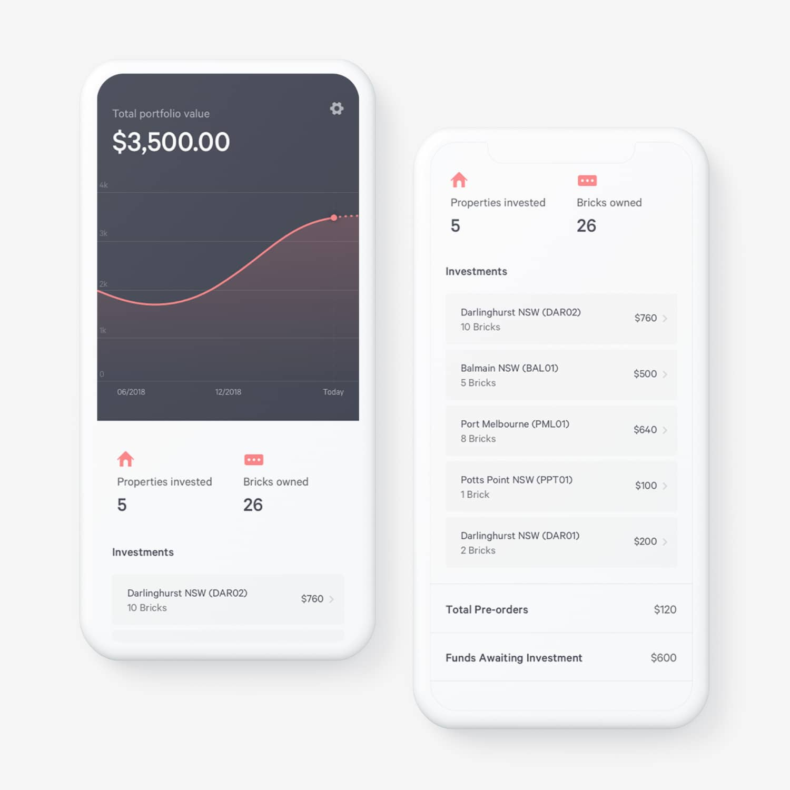
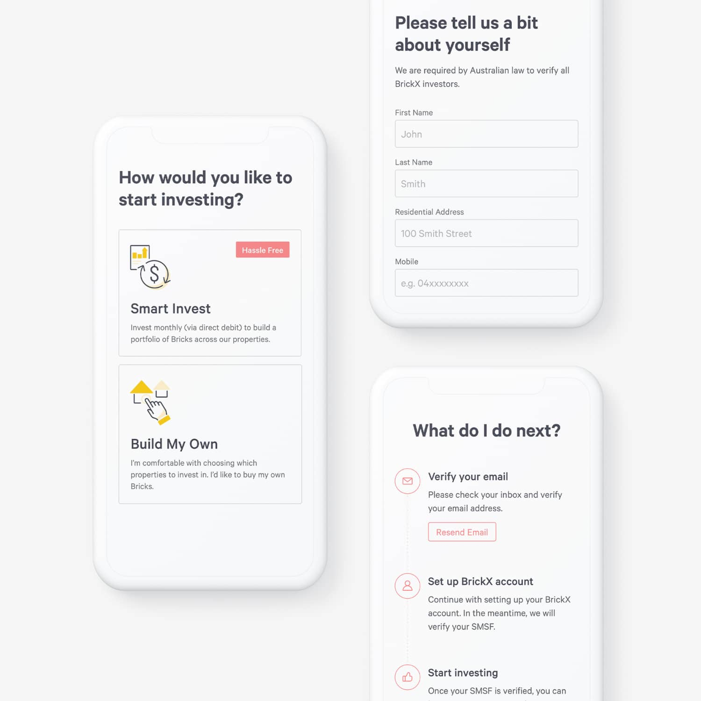
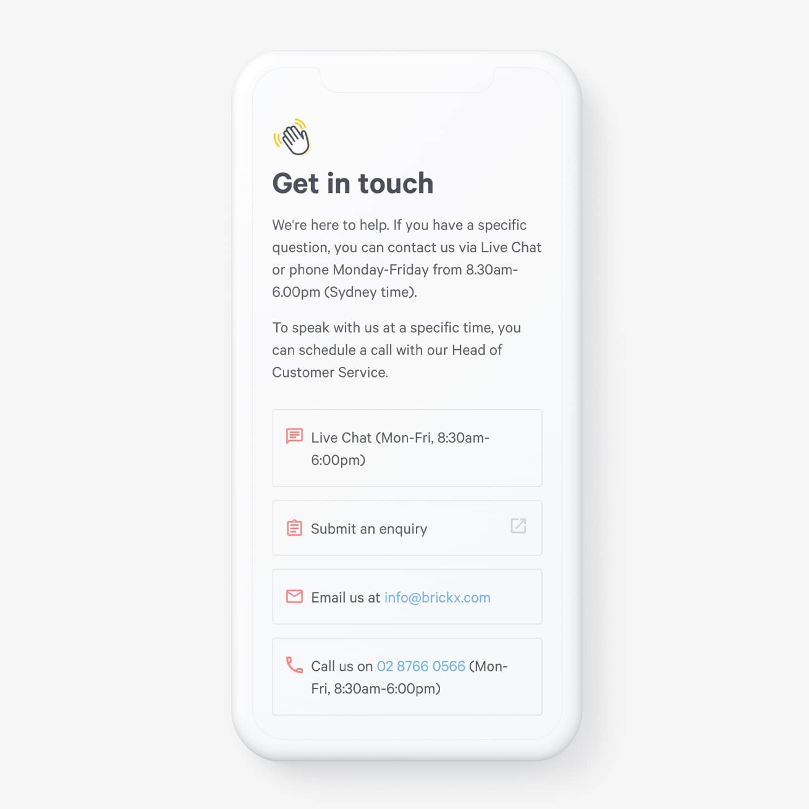
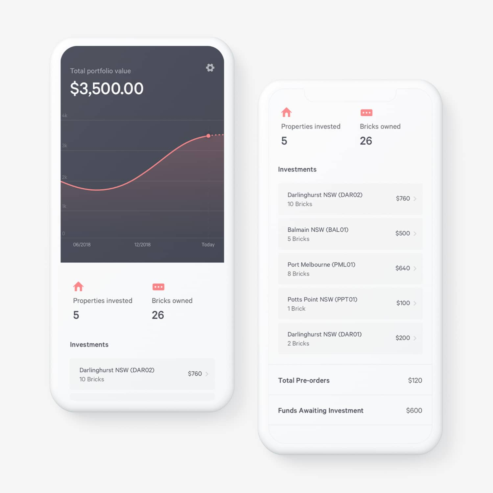
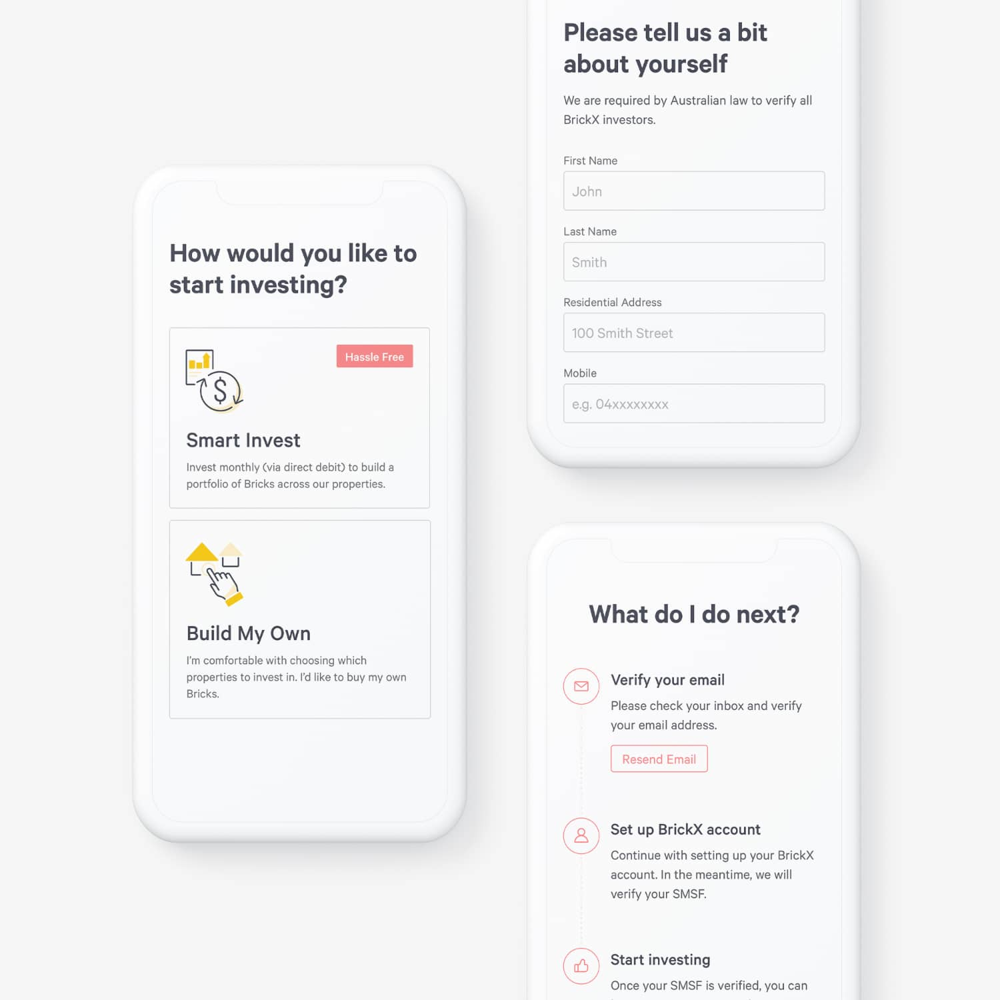
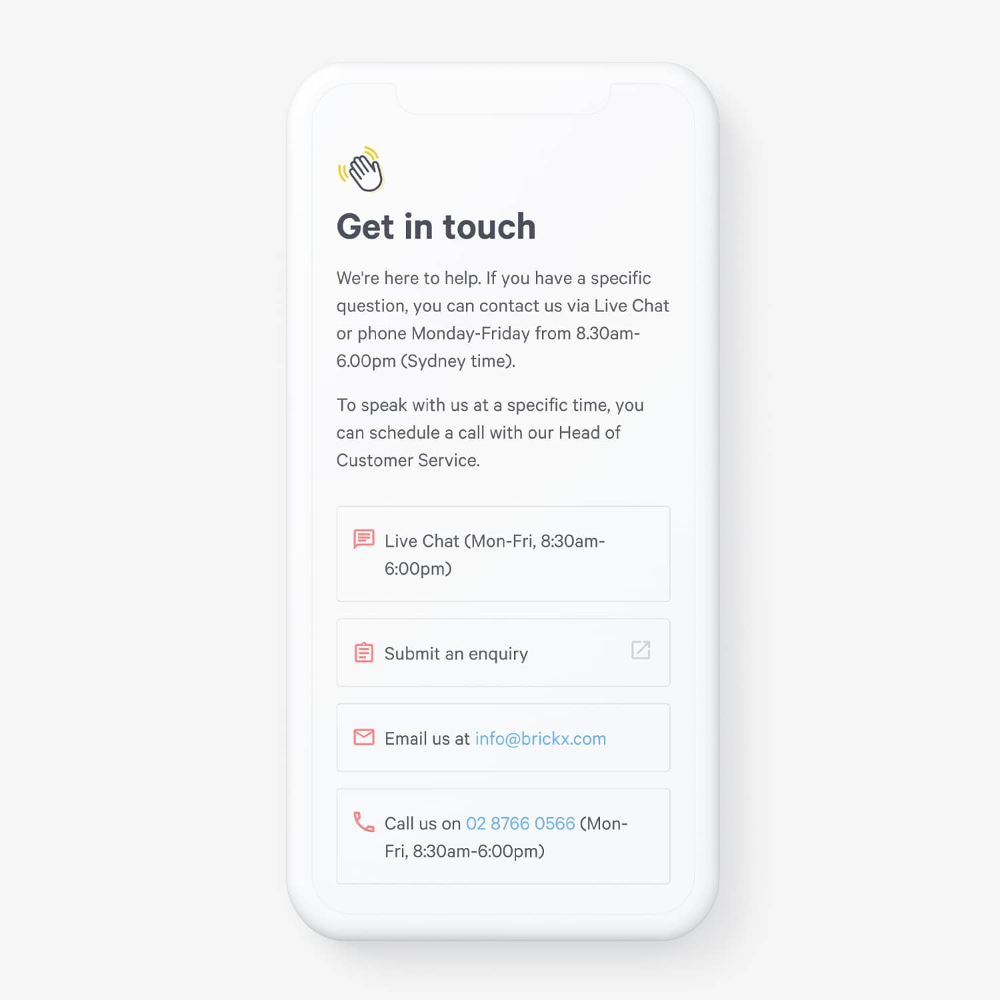

BrickX
Developing a new
visual identity
Client
BrickX
Year
2018
Work areas
Web • User Interface • Illustration
Laying down the foundation
With a new brand identity developed by an external agency, I laid out foundational design elements that could be used across different media. This mainly included creating a typographic system, colour schema, user interface elements , illustration styles and icons.
Web & UI designs
The design elements developed above have been applied to create the new user interfaces. The main goal here was to create a clean and easy to understand designs while maintaining a visual consistency across the site and difference devices.
Mobile first responsive design
Having a majority of website traffic through mobile devices, almost all designs were planned and designed with the mobile-first approach.
 





Designing for larger screens
It was also important not to ignore the user demand on desktop given that investors also use the BrickX trading platform on a larger screens like tablet and desktop.
Illustrating the brand
A new illustration style was set to give a soft and friendly touch to the brand. Based on the style, number of illustrations were made and used across web, UI and digital marketing.